01ภาพรวม

นักบวชไซบอร์กแห่งดาวอังคาร ผู้บูชาเทพแห่งเครื่องจักรและผลิตอาวุธให้ทั้งจักรวรรดิ
02ต้นกำเนิด
ดาวอังคาร (Mars) เป็นอาณาจักรเทคโนโลยีตั้งแต่ก่อนจักรพรรดิมาถึง ในยุค 30K เรียกว่า Mechanicum และทำสนธิสัญญา Olympus เป็นพันธมิตรกับจักรพรรดิ — ชาวดาวอังคารเชื่อว่าจักรพรรดิคือ Omnissiah ร่างมนุษย์ของเทพเครื่องจักร
03เนื้อเรื่องเจาะลึก
สนธิสัญญา Olympus
ก่อนจักรวรรดิเกิดขึ้น Mars เป็นอาณาจักรอิสระของ Cult Mechanicus จักรพรรดิทำสนธิสัญญากับ Mars: Mechanicus ผลิตอาวุธ ยาน และ Titan ให้ ส่วนจักรพรรดิยอมรับเป็น "Omnissiah" และให้ Mars ปกครองตนเอง
Schism of Mars
ในยุค Heresy Fabricator-General Kelbor-Hal ทรยศ ปล่อยไวรัสทำลายเครื่องจักร และเกิดสงครามกลางเมืองบน Mars ฝ่ายที่แพ้หนีไปกลายเป็น Dark Mechanicum ที่รับใช้ Chaos
04ยุค 30K — ในยุค Great Crusade และ Horus Heresy

ยุค 30K Mechanicum เป็นพันธมิตรที่มีอำนาจสูง ช่วง Heresy แตกเป็นสองฝ่าย (Schism of Mars) ผู้ทรยศกลายเป็น Dark Mechanicum
ดูภาพรวมยุค 30K ทั้งหมดที่ เนื้อเรื่องยุค 30K และความต่างของสองยุคที่ เปรียบเทียบ 30K vs 40K
05นิสัยและวัฒนธรรม
- เชื่อว่าความรู้ทั้งหมดถูกค้นพบแล้วในอดีต การ 'คิดค้นใหม่' จึงเป็นบาป
- เปลี่ยนร่างกายเป็นเครื่องจักรเพื่อเข้าใกล้ Omnissiah
- พูดภาษาไบนารี สวดภาวนาให้วิญญาณเครื่องจักร (Machine Spirit)
06จุดที่น่าสนใจ
- Skitarii: ทหารไซบอร์ก
- ควบคุม Titan และ Knight
- Belisarius Cawl ผู้ฝ่าฝืนกฎ 'ห้ามคิดใหม่' สร้าง Primaris Marines
07ความสามารถพิเศษ
สิ่งที่ทำให้ Adeptus Mechanicus แตกต่างจากทัพอื่น — ทั้งพลังที่ติดตัวมาทั้งเผ่า/ทัพ และความสามารถของบุคคลสำคัญ
ของทั้งเผ่า/ทัพ
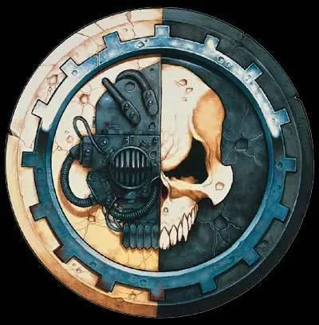
Noosphere และ Binharic
สมาชิก Mechanicus สื่อสารกันผ่านคลื่นข้อมูลที่เรียกว่า Noosphere และภาษาเครื่อง Binharic Cant ส่งข้อมูลเร็วกว่าคำพูดหลายร้อยเท่า
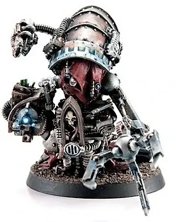
ร่างกายเครื่องจักร
ยิ่งยศสูงยิ่งแทนร่างกายด้วยเครื่องจักร บางคนเหลือแค่สมองในตู้ Tech-Priest ระดับสูงคำนวณได้เหมือนคอมพิวเตอร์ และอายุยืนหลายพันปี
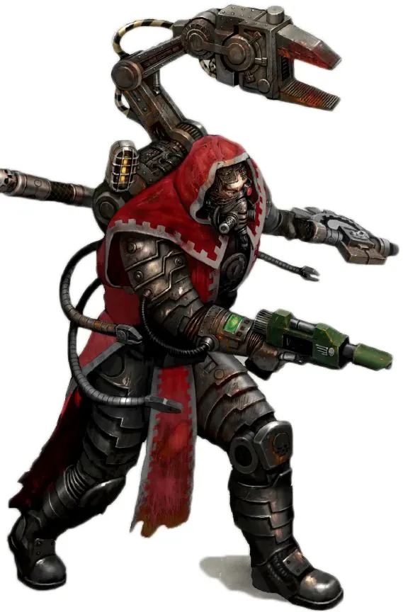
ศาสนาแห่งเครื่องจักร
บูชา Omnissiah (เทพแห่งเครื่องจักร ที่พวกเขาเชื่อว่าคือจักรพรรดิ) และ Machine Spirit วิญญาณในเครื่องจักรที่ต้องทำพิธีปลุกก่อนใช้งาน
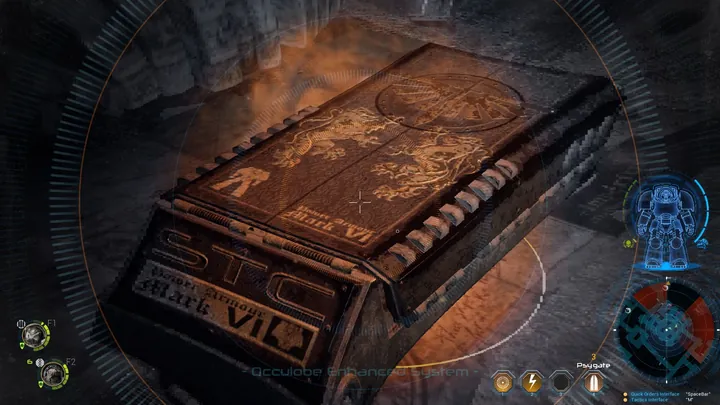
ตามหา STC
Standard Template Construct คือแบบพิมพ์เขียวเทคโนโลยีจากยุค Dark Age of Technology Mechanicus ส่งยานสำรวจ (Explorator) ไปทั่วกาแล็กซีเพื่อค้นหา — การคิดค้นเทคโนโลยีใหม่ถูกมองว่าเป็นบาป
ของบุคคลสำคัญ

Belisarius Cawl
Archmagos DominusTech-Priest อายุกว่าหมื่นปี ผู้สร้าง Primaris Marines มีแขนกลหลายแขนและเก็บสำเนาจิตใจไว้หลายชุด เผื่อร่างหลักถูกทำลาย

Kelbor-Hal
Fabricator-General ผู้ทรยศผู้นำ Mars ในยุค Heresy ที่ทรยศเข้าข้าง Horus เพื่อแลกกับความรู้ต้องห้าม ทำให้เกิดสงครามกลางเมืองบน Mars (Schism of Mars)
08หน่วยและบทบาทในกองทัพ
Adeptus Mechanicus (Mechanicus แห่ง Mars) คือศาสนาแห่งเครื่องจักร ทุกคนดัดแปลงร่างด้วยชิ้นส่วนกล แบ่งเป็นสายวิชาชีพเหมือนมหาวิทยาลัยวิศวกรรม — มีทั้ง "ช่าง" "หมอชีวภาพ" และนักคณิตศาสตร์
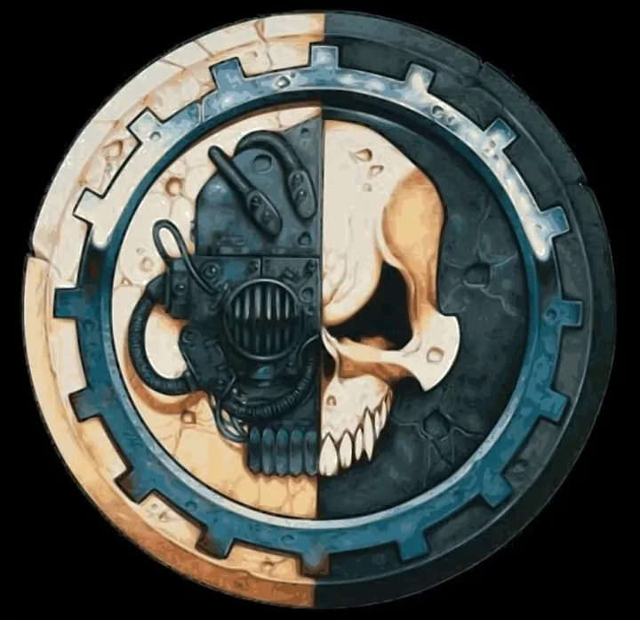
Fabricator-General
แฟบริเคเตอร์-เจเนอรัลผู้นำสูงสุดของ Mechanicus ปกครองดาว Mars และนั่งในสภา High Lords of Terra
Tech-Priest Dominus
เทคพรีสต์ โดมินัสTech-Priest ระดับสูงที่นำกองทัพ Skitarii คำนวณสนามรบเหมือนสมการ
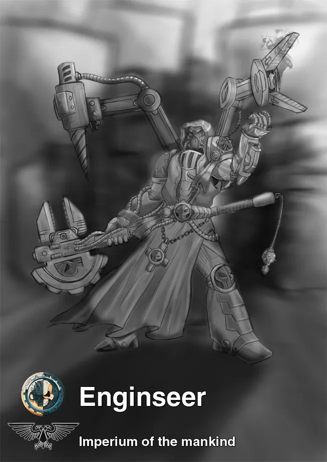
Tech-Priest Enginseer
เทคพรีสต์ เอนจินเซียร์"ช่าง" ภาคสนาม ซ่อมและอวยพรเครื่องจักร ถูกส่งไปประจำกองทัพทุกเหล่าของจักรวรรดิ
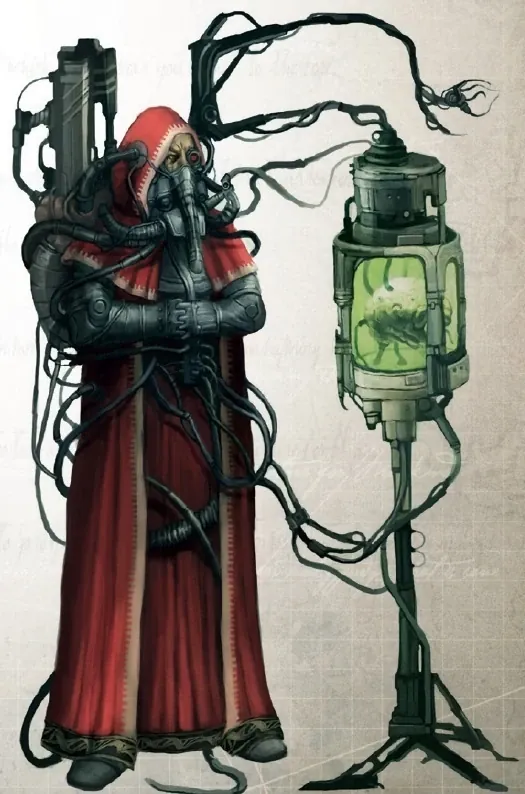
Genetor / Magos Biologis
จีเนเตอร์"หมอ/นักชีววิทยา" ของ Mechanicus ศึกษาพันธุกรรมและสิ่งมีชีวิต ผลิตยา Servitor และร่างกายเทียม เช่น Belisarius Cawl ผู้สร้าง Primaris Marines
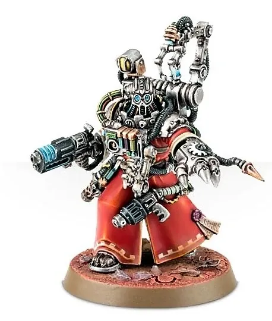
Logis / Datasmith
โลจิส / ดาต้าสมิธนักคณิตศาสตร์และนักวิเคราะห์ข้อมูล ทำนายผลของสงครามด้วยการคำนวณ ส่วน Datasmith ควบคุมหุ่นยนต์ Kastelan
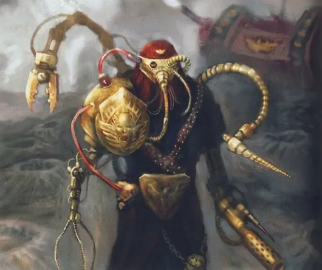
Skitarii
สกิทาริทหารไซบอร์กของ Mechanicus แบ่งเป็น Vanguard (ใช้ปืนกัมมันตรังสี) และ Rangers (ซุ่มยิง) รับคำสั่งผ่านคลื่นข้อมูลโดยตรง
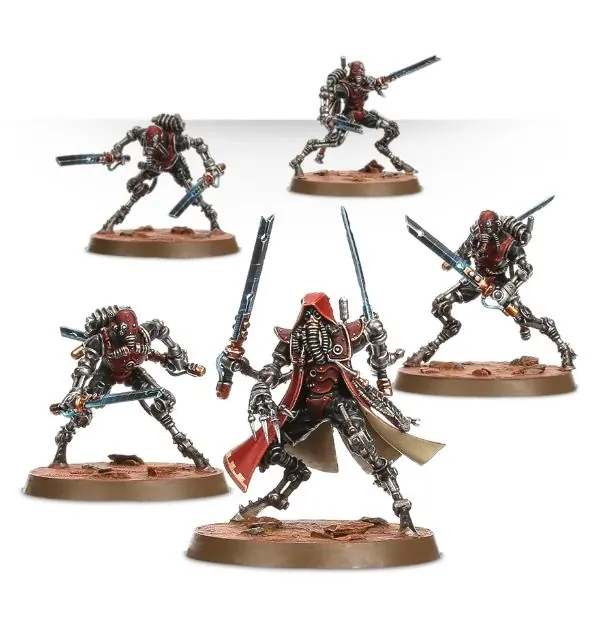
Sicarian
ซิคาเรียนนักล่าไซบอร์กขาเรียวยาว ใช้ดาบคลื่นเสียงหรือปืนสั่นสะเทือน วิ่งเร็วและฆ่าได้แม่นยำ
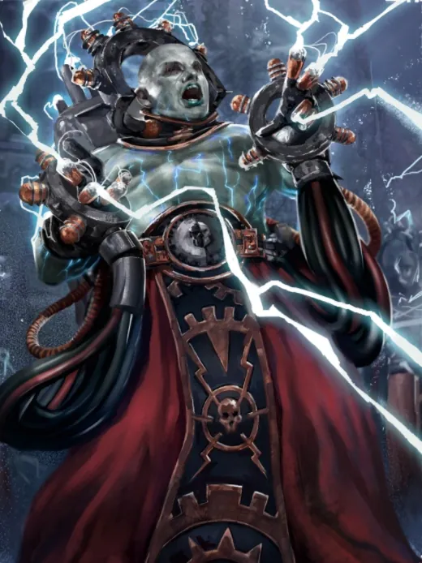
Electro-Priest
อิเล็กโทร-พรีสต์นักบวชคลั่งที่เก็บพลังไฟฟ้าในร่างกาย — Fulgurite ดูดพลังไฟฟ้า ส่วน Corpuscarii ปล่อยฟ้าผ่าใส่ศัตรู

Servitor
เซอร์วิเตอร์มนุษย์ที่ถูกลบความคิดและใส่โปรแกรม ทำงานซ้ำ ๆ เช่น ถืออาวุธ ซ่อมเครื่อง หรือคำนวณ
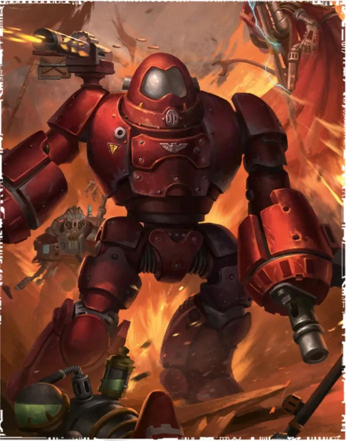
Kastelan Robot
หุ่นยนต์คาสเทลันหุ่นยนต์สงครามโบราณที่มีปัญญาประดิษฐ์จำกัด (AI ถูกห้ามในจักรวรรดิ) ควบคุมด้วยโปรแกรมที่ Datasmith ส่ง
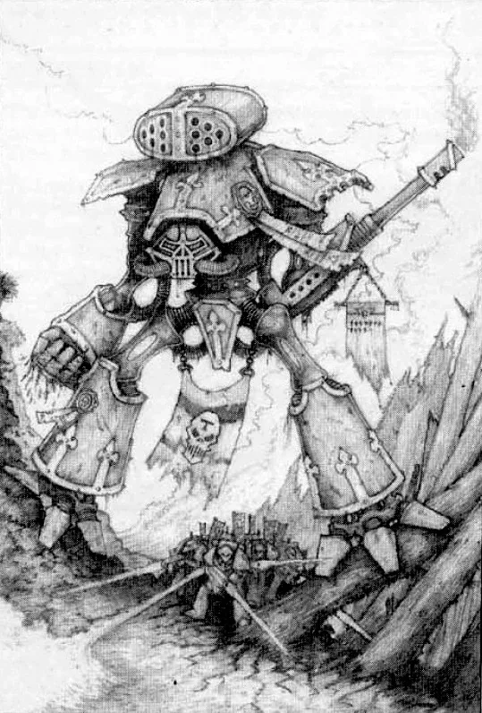
Titan / Princeps
ไททัน / พรินเซปส์หุ่นรบยักษ์สูงหลายสิบเมตรของ Collegia Titanica ขับโดย Princeps ที่เชื่อมจิตกับวิญญาณเครื่องจักรของ Titan
09วีรกรรมและเหตุการณ์สำคัญ
Treaty of Olympus
เป็นพันธมิตรกับจักรพรรดิ
Schism of Mars
สงครามกลางเมืองบนดาวอังคาร
Ultima Founding
Cawl ส่งมอบ Primaris Marines ที่พัฒนามาหมื่นปี
10ตัวละครสำคัญ
Belisarius Cawl
Archmagos Dominusมีชีวิตมาหมื่นปี ผู้สร้าง Primaris
11ยุค 40K — สหัสวรรษที่ 41
ยุค 40K Adeptus Mechanicus ควบคุม Forge World นับพัน ผลิตอาวุธ ยาน และรถถังทั้งหมดของจักรวรรดิ พร้อมออกสำรวจหาเทคโนโลยีโบราณ (Quest for Knowledge)
12เนื้อเรื่องล่าสุด (Era Indomitus / M42)
ยุค Era Indomitus Mechanicus เสียดาวโรงงานจำนวนมากใน Great Rift แต่ยังเป็นหัวใจการผลิตของ Indomitus Crusade
หลังการเกิด Great Rift ปฏิทินของจักรวรรดิคลาดเคลื่อน เหตุการณ์ยุคปัจจุบันจึงมักระบุเพียง 'M42' ไม่มีปีที่แน่นอน
13แกลเลอรี

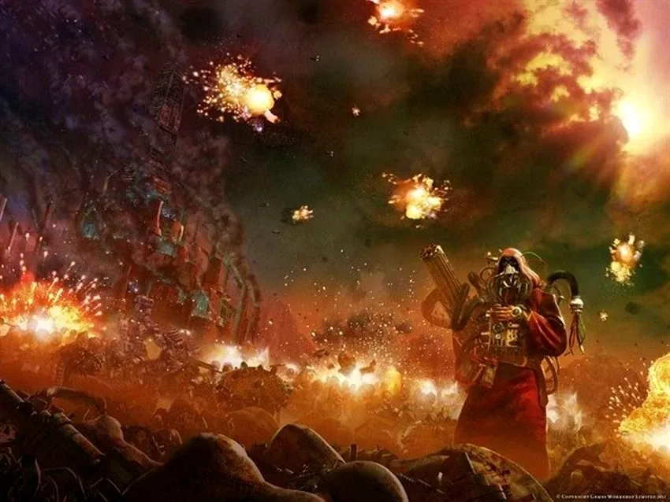
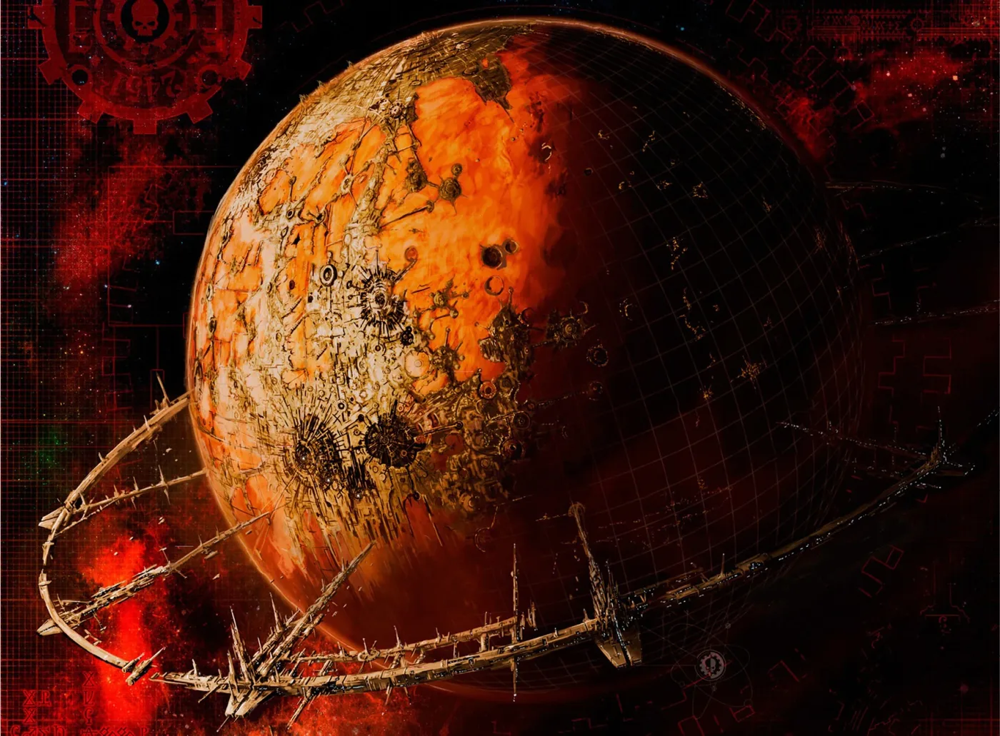
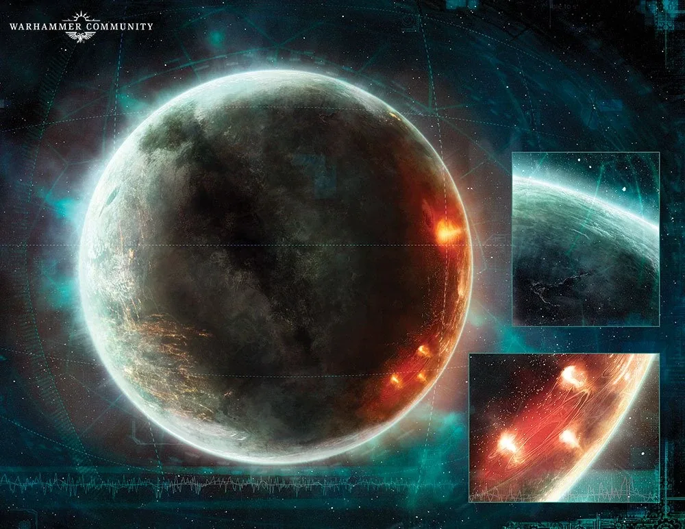